来源：https://qqdodsesuun.feishu.cn/docx/FwDBdyWijoQ6L0xNkW5c2DXhnAf
大家好，俺是胖虎。
之前一直从事少儿编程和人工智能教育相关的工作。
（生财帖子：《我把教培机构，开到了社区和小学里》）
开过两次线下的培训课程，教孩子如何使用 ChatGPT 和其他 AI 工具。
（生财帖子：《我给小学生，上了一堂 ChatGPT 课》）
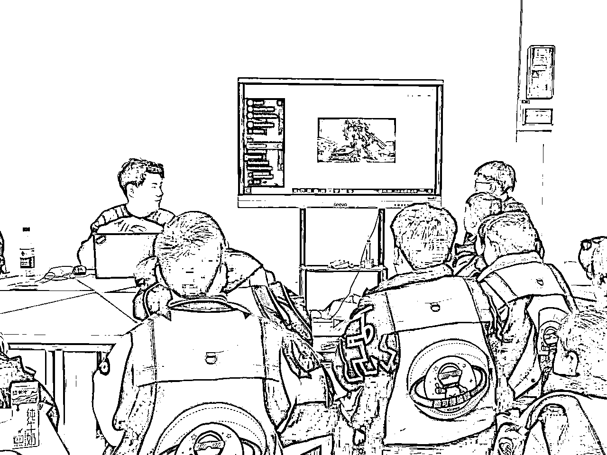
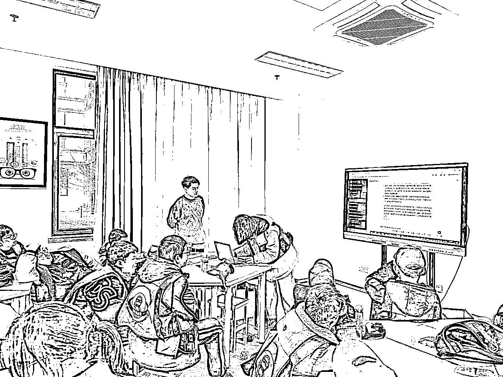
这篇帖子聊的 AI 教育主要指面向中小学的基础教育。
不聊宏观的教育变革，只分享一些在这个领域我看到、想到、可能去做的一些事情，还有如何生财。
先同步两条宏观信息。
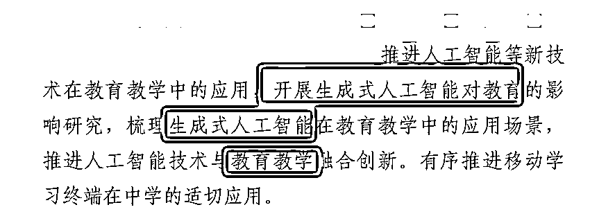
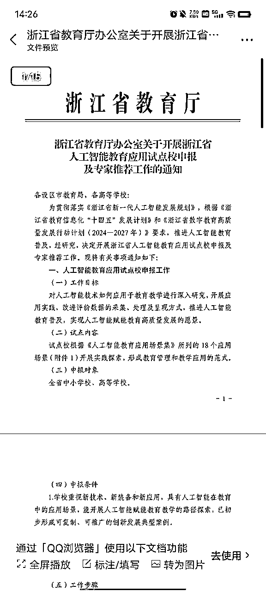
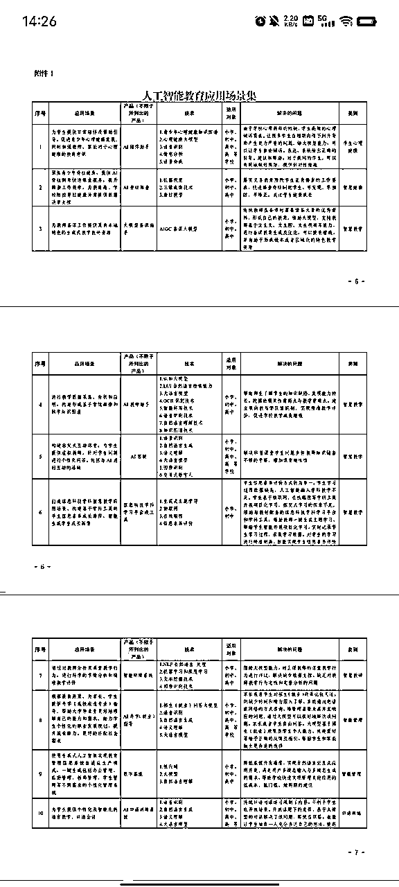
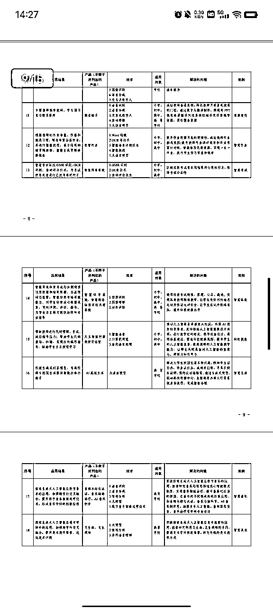
能感受到随着 AI 的发展，大家的重视程度越来越高，运用到教育上虽然会滞后一些，但也在慢慢融合。
对于这两条信息不做过多展开，了解这些信息，是因为自己做的业务中，跟浙江的高校和区县教育局合作比较多，经常会跟教育技术相关的主任和老师做交流。他们对 AI 很感兴趣，但多数停留在公众号文章和短视频的普及上，真正使用过 AI 工具的少之又少。
对于 AI 教育我们先聊聊老师。
我本科学的是计算机师范，周围的同学朋友大多在中小学当老师，前段时间我面对面沟通了三位的一线教师，收集他们的需求，结合真实场景，用 ChatGPT 辅助解决，为教师提效。
（生财帖子：《真实教学场景下，用 GPT 给教师提效》）
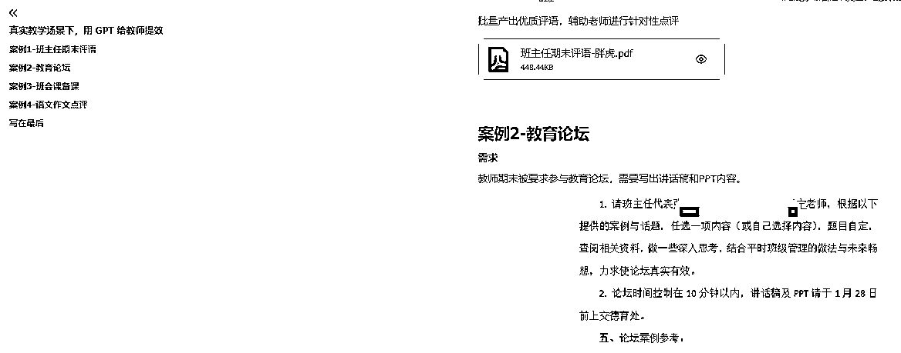
但重点还是如何商业化，我们一起来看看。
学分培训
体制内的教师，会有继续教育学分的要求，5 年 360 学分，这些培训的费用由政府财政负责，金额大概是 500 一天，教师按规定时间在平台选课、上课即可。
这部分的培训的课程，大多比较水，内容偏理论，老教师们一般签个到就溜了。
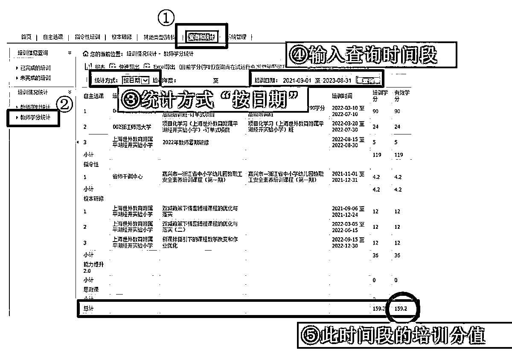
专业培训
还有一些针对老师的培训，与学分无关，由本地教育局、学校或教师自行组织，进行专项学习和技能提升。费用一般由三方共同组合承担，这部分培训对课程和老师要求会更高，收费也会更多。
一般高等院校会有这个教师培训的资质，浙大、杭师大、浙外等等。一般由大学中的继续教育学院负责，承接、组织相应的教师培训。
但大学内嘛，负责老师事情也多，会外包很大一部分给培训机构，负责方案、课程、服务，高校会抽取营收的 15%~30%。
目前，教师培训的 AI 实操课程还没有。如果有相应的渠道或者资质，制作 AI+老师方向上的各种课程，AI备课、AI做PPT、AI工作提效等，会是一个不错的方向。
这个生意赚不了大钱，好在稳定、刚需，这类的课程也确实能帮助到一线的老师。最近我也在跟相关机构交涉，合作研发面向老师的 AI 培训课。
如果没有线下培训的渠道和资质，AI 教师提效线上课也是有需求的。
这个圈友们就太熟悉了，知识付费训练营嘛，针对部分精准用户推出相应课程。
老师在工作中除了上课，还有一堆杂活，其中文字工作占据很大一部分，很多老师会在小红书、闲鱼、淘宝上去买教案、课件、班主任评语等资料，在这点 AI 工具能很大程度上帮助他们。
目前这位老师做的不错，已经第三期了，大家可以参考一下。
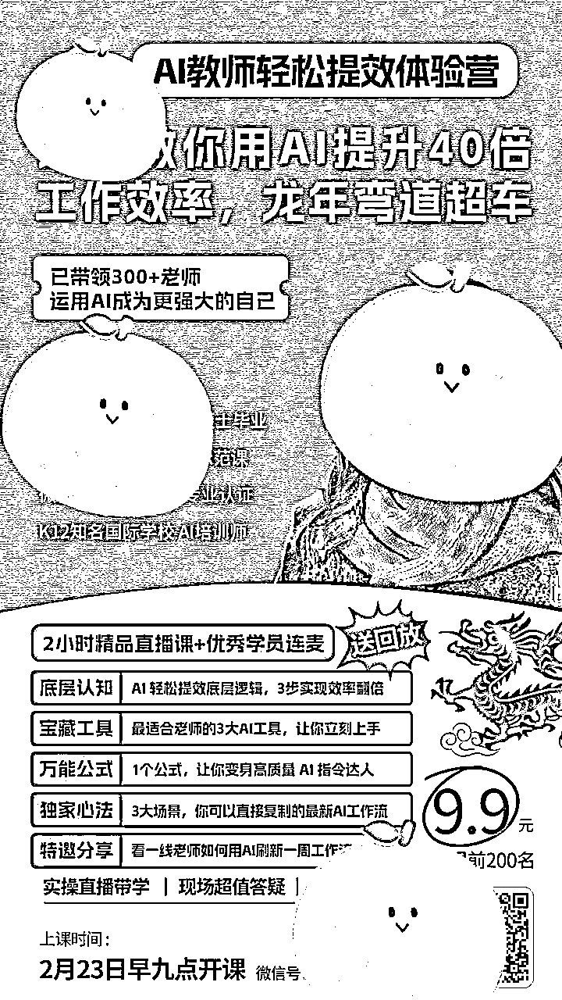
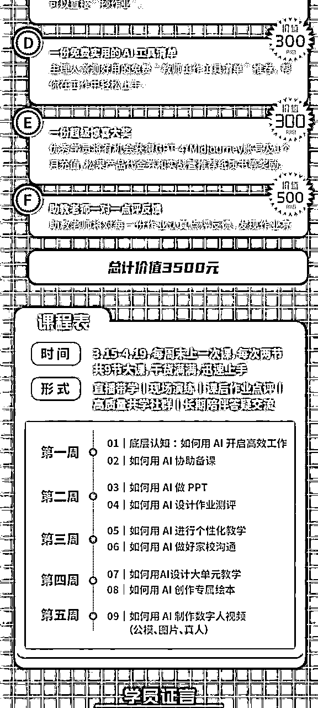
我们有一部分业务会跟各个科技类、编程类培训机构合作，有些比较熟悉的老板知道我在做 AI 方面，就让我给他们机构老师去做培训。
去年年底做了两场，没有专门形成方案当成一个项目去做，但需求是真实存在的，老师们的反响也特别好。
课程内容就结合机构的日常工作，让他们学习使用 AI 工具，运用到教学、服务和新媒体宣传上。
相比老师的教学质量提升，机构老板们对于 AI 辅助新媒体营销更感兴趣。
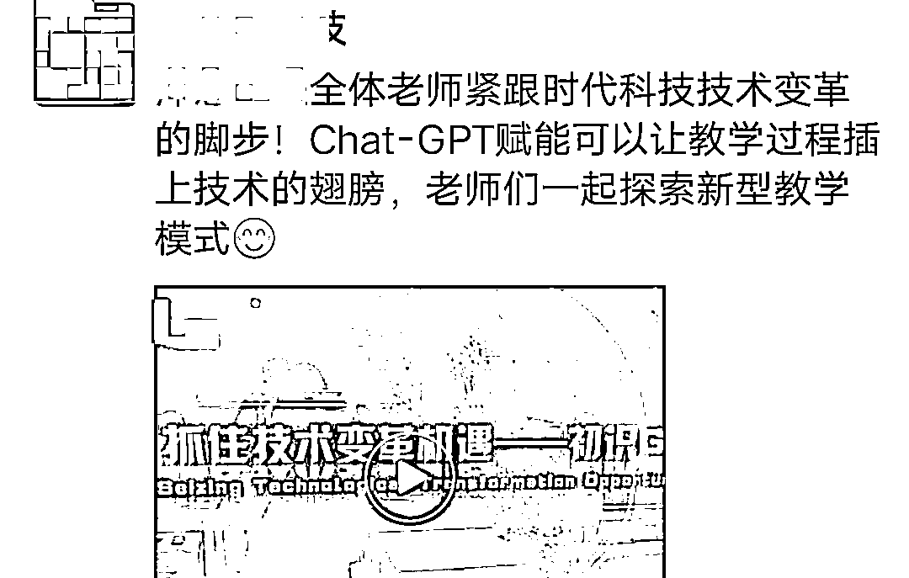
对于机构的培训有一定需求和市场，之后可能会把这作为一个小项目来做，融入到业务当中去。
我做过三年的传统人工智能课程培训，主要是少儿编程、机器人培训。
感觉这次的 AI 浪潮，跟2017年少儿编程培训兴起有一点像，国家关注，政策导向，对孩子未来就业有帮助。
最大的不同是学少儿编程打代码，是一项技术，有机会成为科技特长生，对升学有很大帮助。
少儿 AI 并没有那么刚需，提高的是孩子的想象力、创造力和提问能力，好是好，但并不刚需。
引用刀姐的一段话，我非常喜欢和赞同：
因为正在构建少儿AI游戏化社区，刚和同事开会讨论小朋友和成年人对于生成式AI的预期区别。
企业主：不能精准、稳定产出，就pass。
成年人：一次输出结果体验不好，就再也不用。
小朋友：错误的结果也能令人兴奋，愿意再次”创造”。即使生成文心版本的“车水马龙”，小朋友也享受这样“玩AI”的过程。
结论是：
小朋友是享受混乱的，享受错误的结果的，所以他们才能创造。
AI原住民们才能没有目的的玩出来很多新东西。
创造从来都不是因为“对”。
少儿 AI 的培训，我开展了两期，是以【科技研学营】为主题，融入一部分 AI 工具的教学。
孩子们兴趣极高，脑洞巨大，遗憾的是没有长期进行授课，来观察孩子们整体的变化。
第二期课程时，我用上了多的AI绘图、AI视频工具，孩子们的反响更好，国内的文心一言、讯飞星火、豆包也一定程度上可以运用到教学中，让孩子们的学习难度降低。
下一步的打算是制作项目化课程，AI通识、AI编程、AI小说、AI绘本、AI视频、AI游戏等内容，可以自己TOC来上课，也能打包 TOB 卖给机构，老师和学生一起教！
目前市面上的少儿 AI 课程，大家也可以参考一下。
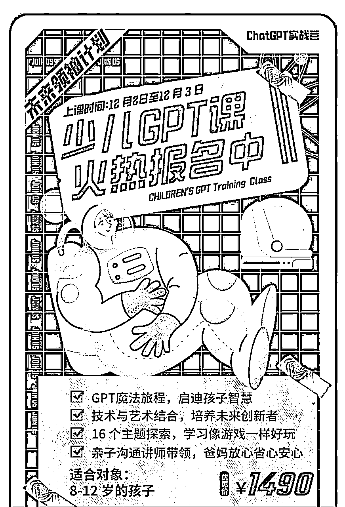
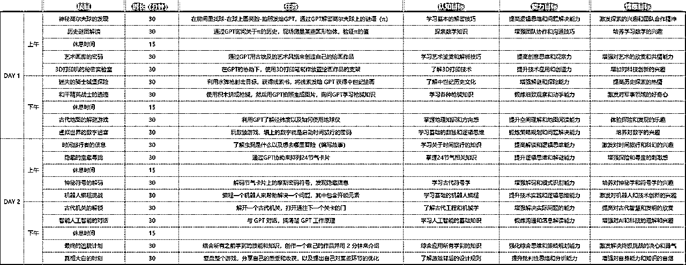
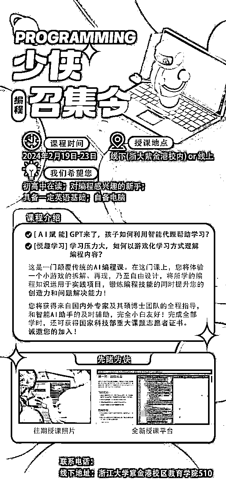
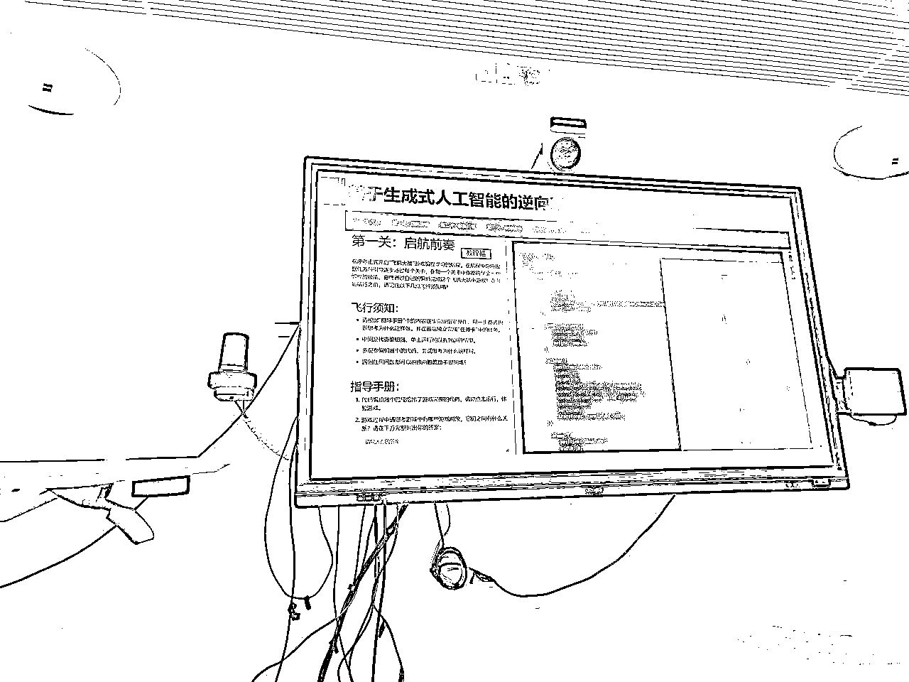
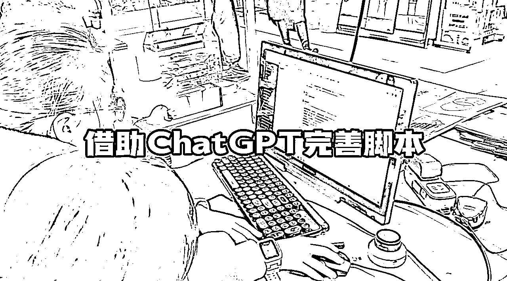
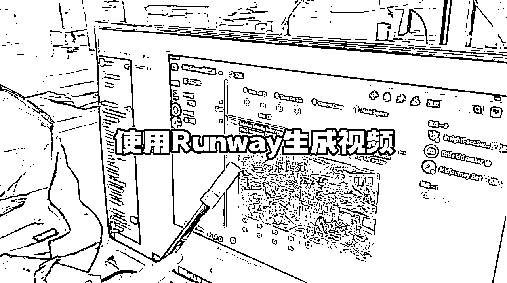
线上课其实我还挺心动的，之前我就跟着条形马老师做在线教育，也有一些经验。如果做好了这一块也能赚钱。
但我一直想不好所呈现的形式是什么样的，效果能不能达到，会不会存在其他问题。
可能还需要思考一段时间。
上次跟向刀姐请教了俩小时，了解到一个很有意思的产品。
刀姐正在做的这款产品，是社区的形式，让孩子使用生成式 AI 自己构建场景，自主创作，做出互动的游戏内容，孩子们互相尝试。可能有点像蛋仔派对 DIY 地图的形式，我还是非常期待的。
跟刚才讲的 AI 编程课是一体的，游戏化的学习工具，通过智能 AI 助手，帮助孩子逆向拆解游戏代码，快速提升编程能力和解决问题的能力。
目前刚开发出来，先从线下教学的场景收集一些数据再去迭代。
搜索到的一些 AI 教育类产品，我试用了一下，效果一言难尽。
其中河马爱学有些功能还不错，大家可以下载尝试尝试。
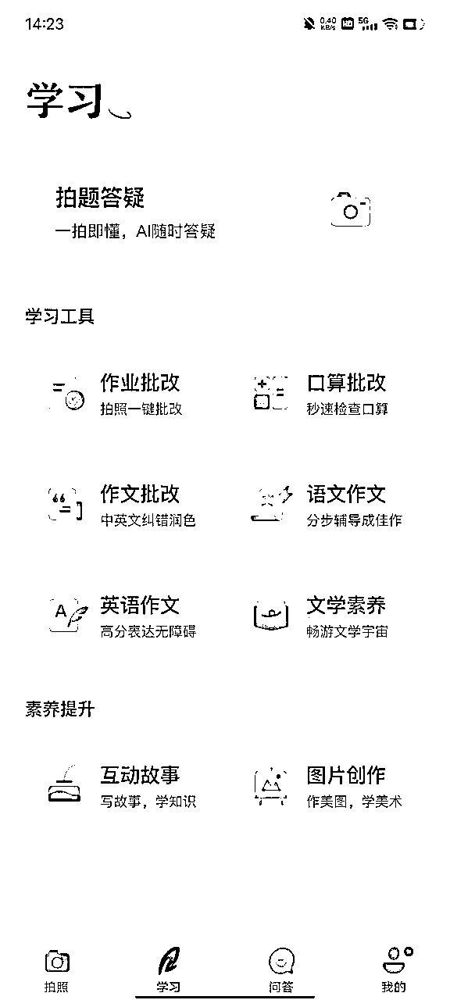
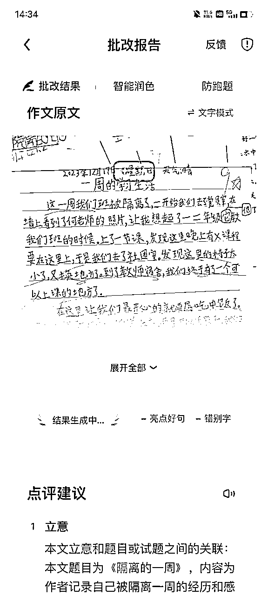
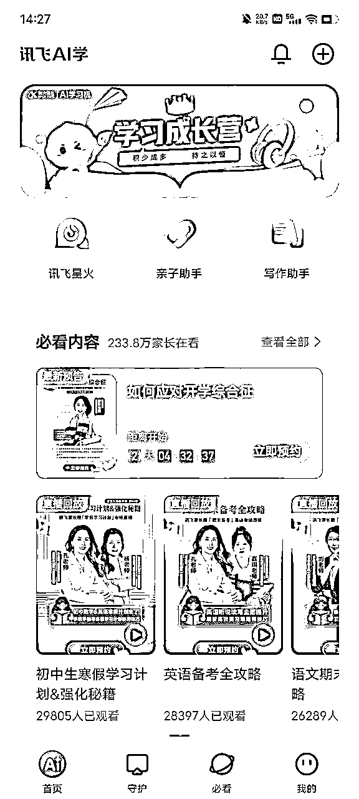
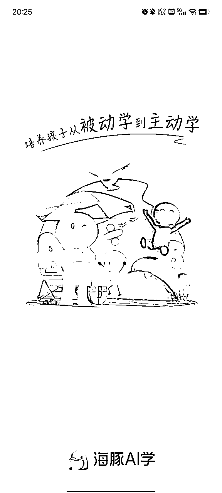
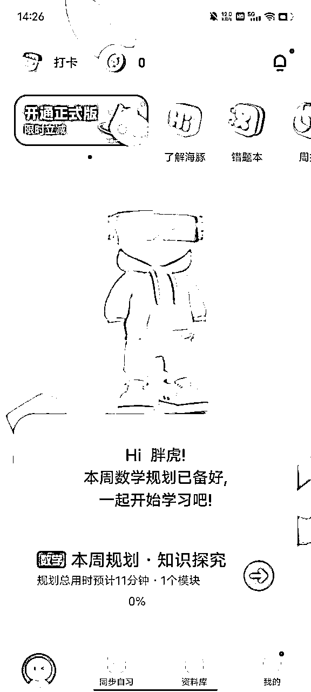
据我了解，目前市面上还没有推出结合生成式 AI 的硬件产品，技术和应用方面的变动实在太快了。
讯飞、学而思、一起学、作业帮在AI教育赛道疯狂抢占市场，也在研发 AI 大模型的学习机，这可能是一个比较大的方向。
如果技术成熟、成本下降，会不会出现这样一款产品：可的穿戴式的 AI 眼镜设备带上视觉识别、语音交互，变成随身助理，基于教学内容和课程帮助孩子。随孩子的眼睛移动，也能判断出孩子的困惑，注意力的方向，思考的时间等内容，对学习会产生巨大的改变。
这篇央视财经的报道很好，有圈友在风向标发过：太火爆！一门课，两个月吸粉十五万人！企业纷纷布局！千亿级大市场，来了？
AI大模型在教育领域的应用，一定会越来越广泛。
后续可能会出现成体系的课程和阶段测试，优质的少儿 AI 产品，AI 名师教学答疑，学校内的 AI 数字化工具等等，不管是课程、软件还是硬件产品，都会有很大的更新。
我希望这个领域能发展起来，带给孩子更多的帮助，我们也能找好方向，好好生财。
这篇内容抛砖引玉，也希望能给到圈友们一些启发。
感谢大家！